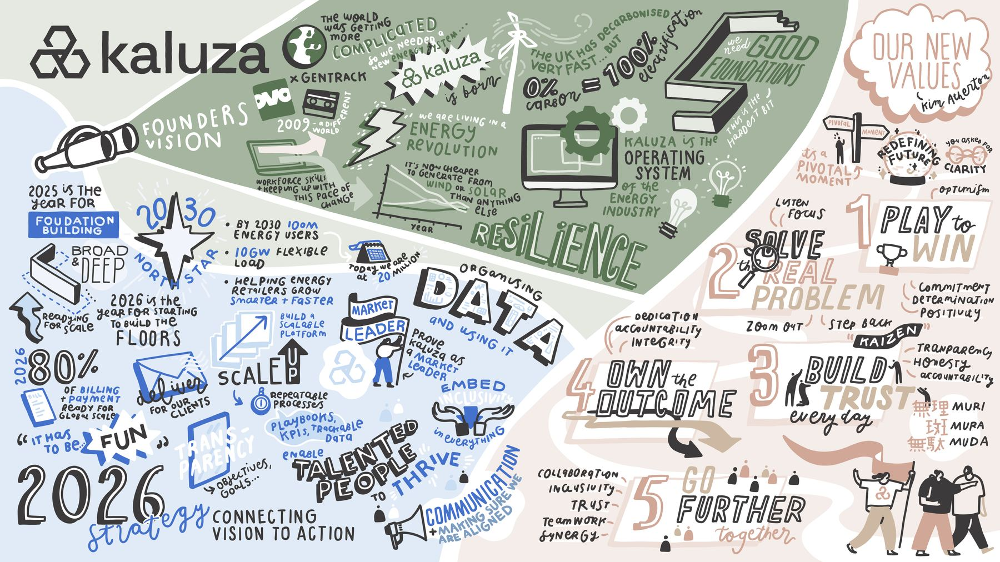
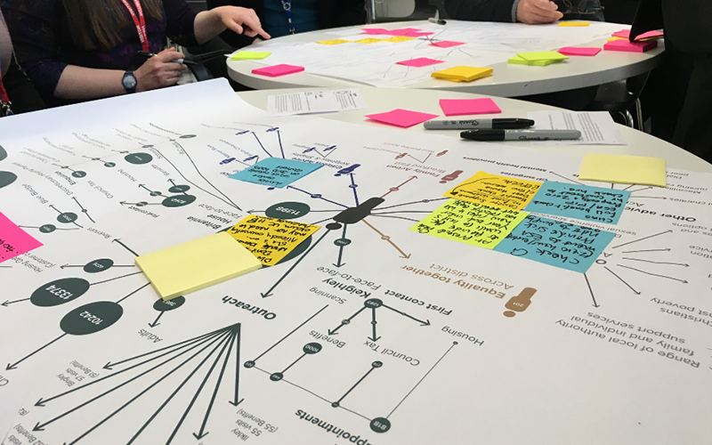
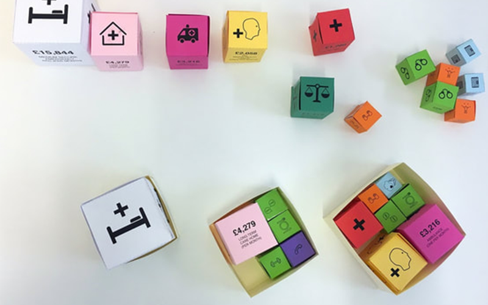

Design for complex systems
Product and UX/UI design, user research and service design - applied across technology, non profits and the public sector.

01
2020–2026 · Kaluza
In-house product design
Leading design and research, within a UX team, in a growing global b2b SaaS climate tech platform business. Working cross functionally with product and tech leads, to shape user-friendly, insight and data driven user experiences.

02
2018–2020 · Torchbox & TPX Impact
Design consultancy
Service design and research programmes for central government, local authorities and charities tackling homelessness and adult social care, working alongside product directors and delivery managers.

03
2016–2018 · Non profits
Freelance contracts
Consultancy work, creative facilitation, co-design projects, participatory workshops, guest lectures, design strategy, graphic design and illustration.